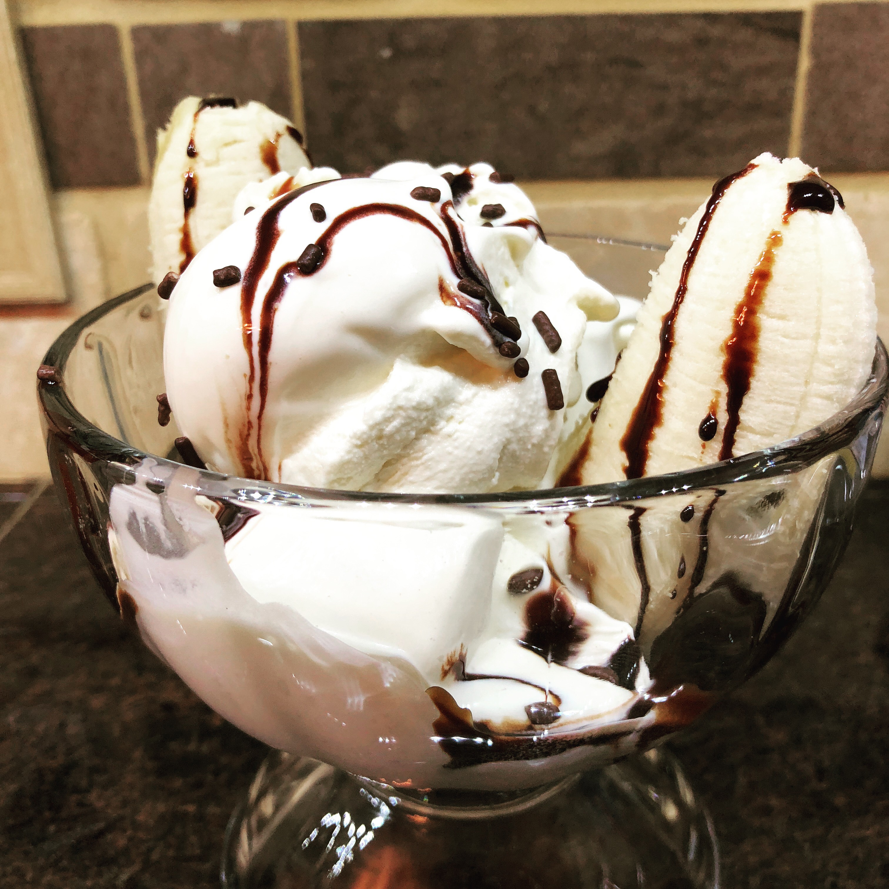

Homemade Ice Cream

Ingredients
- 1 1/4 cups half-and-half
- 4 egg yolks
- 1/2 cup sugar
- 1 1/4 cups whipping cream
- 2 teaspoons vanilla
- Pinch of salt
Instructions
In medium saucepan over medium heat, heat half-and-half until very hot but not boiling. Stir often. Remove from heat.
Place egg yolks and sugar in mixer. Mix until blended. Add half-and-half and mix until blended.
Return half-and-half mixture to saucepan and heat until small bubbles form around edge and mixture is steamy. Do not boil.
Pour heated mixture into large bowl. Stir in whipping cream, vanilla and salt.
Cover and chill in the fridge for 8 hours.
Pour into ice cream maker and follow directions accordingly. (We use the KitchenAid Ice Cream Maker. If you are using this maker, pour the mixture into the freeze bowl. Mix on Speed 1 for 15-20 minutes or until desired consistency. Serve immediately or freeze in airtight container.)
Original source: KitchenAid